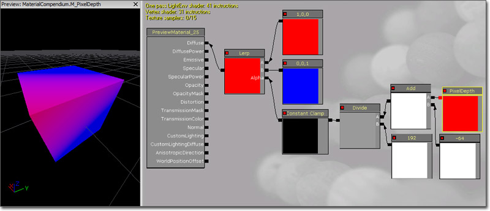
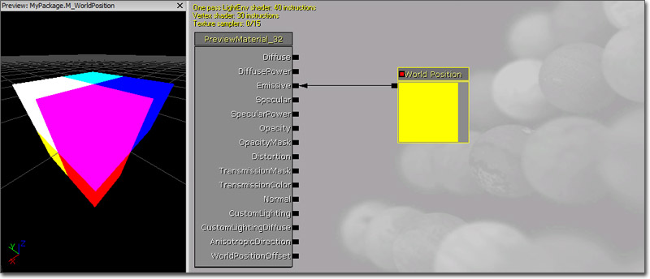

UDN
Search public documentation:
MaterialsCompendiumKR
English Translation
日本語訳
中国翻译
Interested in the Unreal Engine?
Visit the Unreal Technology site.
Looking for jobs and company info?
Check out the Epic games site.
Questions about support via UDN?
Contact the UDN Staff
日本語訳
中国翻译
Interested in the Unreal Engine?
Visit the Unreal Technology site.
Looking for jobs and company info?
Check out the Epic games site.
Questions about support via UDN?
Contact the UDN Staff
머티리얼 개론
문서 변경내역: Alan Willard 원저. Dave Burke, Daniel Wright, Wyeth Johnson, Jeff Wilson 업데이트. 홍성진 번역.
- 머티리얼 개론
- 개요
- 파라미터
- 머티리얼 제작시의 색 고려 방법
- 머티리얼 표현식
- Abs
- Add
- AntialiasedTextureMask
- AppendVector
- BumpOffset
- CameraVector
- CameraWorldPosition
- Ceil
- Clamp
- ComponentMask
- Constant
- Constant2Vector
- Constant3Vector
- Constant4Vector
- ConstantBiasScale
- ConstantClamp
- Cosine
- CrossProduct
- Custom
- CustomTexture
- DepthBiasBlend
- DepthBiasAlpha
- DepthBiasedBlend
- DeriveNormalZ
- Desaturation
- DestColor
- DestDepth
- Distance
- Divide
- DotProduct
- DynamicParameter
- FlipBookSample
- Floor
- FluidNormal
- FMod
- FoliageNormalizedRotationAxisAndAngle
- FoliageImpulseDirection
- FontSampler
- Frac
- Fresnel
- FunctionInput
- FunctionOutput
- If
- LensFlareIntensity
- LensFlareOcclusion
- LensFlareRadialDistance
- LensFlareRayDistance
- LensFlareSourceDistance
- LightmapUVs
- LightmassReplace
- LightVector
- LinearInterpolate
- MaterialFunctionCall
- MeshEmitterDynamicParameter
- MeshEmitterVertexColor
- MeshSubUV
- MeshSubUVBlend
- Multiply
- Normalize
- ObjectOrientation
- ObjectRadius
- ObjectWorldPosition
- OcclusionPercentage
- OneMinus
- Panner
- ParticleMacroUV
- ParticleSubUV
- PerInstanceRandom
- PixelDepth
- Power
- ReflectionVector
- Rotator
- RotateAboutAxis
- ScalarParameter
- SceneDepth
- SceneTexture
- ScreenPosition
- Sine
- SphereMask
- SquareRoot
- Subtract
- StaticBool
- StaticBoolParameter
- StaticComponentMaskParameter
- StaticSwitchParameter
- StaticSwitch
- TextureCoordinate
- TextureSample
- TextureSampleParameter2D
- TextureSampleParameterCube
- TextureObject
- TextureObjectParameter
- TextureSampleParameterMeshSubUV
- TextureSampleParameterMeshSubUVBlend
- TextureSampleParameterMovie
- TextureSampleParameterNormal
- TextureSampleParameterSubUV
- Time
- Transform
- TransformPosition
- TwoSidedSign
- WorldPosition
- WorldNormal
- VectorParameter
- VertexColor
- WindDirectionAndSpeed
개요
파라미터
머티리얼 제작시의 색 고려 방법
머티리얼 표현식

- 설명, 주석 - 모든 머티리얼 표현식에는 공용 속성 Desc (설명)이 있습니다. 이 속성에 입력된 문구가 머티리얼 에디터에서 표현식 바로 위 작업공간에 표시됩니다. 어떤 식으로 사용해도 괜찮지만, 보통은 표현식의 용도나 기능에 대해 짧막히 적어두기에 좋습니다.
- 제목 바 - 머티리얼 표현식의 속성에 관한 적절한 정보나 이름이 표시됩니다.
- 출력 - 머티리얼 표현식 연산의 결과물이 출력되는 링크입니다.
- 미리보기 - 머티리얼 표현식의 출력값을 미리보여주는 창입니다. 실시간 업데이트 모드를 켜면 자동으로 업데이트됩니다. 스페이스바를 쳐서 수동으로 업데이트시킬 수도 있습니다.
- 입력 - 머티리얼 표현식이 사용할 값을 받아들이는 링크입니다.
Abs
Abs는 수학 용어 "absolute value"(절대값)의 약자입니다. Abs 표현식은 받아들인 입력값의 절대값, 또는 부호를 뺀 값을 출력합니다. 근본적으로 음수는 - 부호를 버려 양수로 만들고, 양수랑 0은 그대로 놔둔다는 뜻입니다. 예제: -0.7 Abs는 0.7; -1.0 Abs는 1.0; 1.0 Abs 역시 1.0 용례: Abs는 보통 DotProduct 와 함께 사용됩니다. DotProduct(도트 곱)은 -1..0..1 값을 지니는 반면, 도트 곱의 절대값은 1..0..1 값이 됩니다.
Add
(더하기) 포토샵의 화면 레이어 블렌드와 유사하게, Add 표현식은 두 입력을 받아서 더한 다음 결과를 출력합니다. 덧셈은 채널별로 이루어 집니다. meaning that the inputs' R channels get added, G channels get added, B channels get added, etc. Both inputs must have the same number of channels unless one of them is a single Constant value. Constants can be added to a vector with any number of inputs. 입력- A - 여기다가 더합니다.
- B - 더해질 값입니다.

AntialiasedTextureMask
(앤티앨리어싱된 텍스처 마스크) 부드러운 (앤티-앨리어싱된) 전이 마스크를 사용하여 머티리얼을 만들 수 있는 머티리얼 표현식입니다. 이 마스크는 복잡한 머티리얼 속성 둘을 블렌딩하거나 (SoftMasked와 궁합이 잘 맞는) 알파 블렌딩된 머티리얼을 페이드 아웃시키는 데 쓸 수 있습니다. 그냥 한 (빨강, 초록, 파랑, 알파) 채널에 마스크가 할당된 텍스처를 지정하고, 표현식에 사용된 채널을 설정한 뒤 비교값을 지정합니다. 채널이 0=검정에서 1=하양까지의 그레이스케일 값을 갖는다 가정하고, 비교 함수가 결과 마스크를 0과 1로 정의합니다. 이 표현식은 파리미터이며, 자식 머티리얼 인스턴스에서 Texture (텍스처) 속성을 덮어쓸 수 있습니다. 프로퍼티- Threshold (한계점) - 픽셀 범위의 한계점으로 사용되는 값입니다. 이 값보다 픽셀 범위가 작으면 검정이, 크면 하양이 됩니다.
- Channel (채널) - 마스크로 사용할 텍스처의 채널을 지정합니다.
- Texture (텍스처) - 사용할 마스크 텍스처를 지정합니다.
- UVs - 텍스처 마스크에 적용할 텍스처 좌표를 받습니다.
Result = 1 if TextureLookup < Threshold then Result = 0실제 구현은 약간 더 복잡한데, 앨리어싱을 피하기 위해 실제 픽셀 범위에 따라 0과 1 사이의 값을 반환하려 하기 때문입니다. 예제(최상의 품질을 위해 미압축 상태인 자그마한 128x128 텍스처): https://udn.epicgames.com/pub/Three/MaterialsCompendium/ULogoLowBlurred.bmp (왼쪽 위) 노멀 텍스처로 사용된 것과 (오른쪽 아래) 설명한 머티리얼 표현식으로 사용한 것은 이와 같습니다:
 이 기술은 확대되거나 블러링된 입력 콘텐츠 작업시 최적의 결과를 냅니다. 압축은 품질을 크게 손상시키니 미압축 저해상도 텍스처를 사용하도록 하십시오.
이 기술은 확대되거나 블러링된 입력 콘텐츠 작업시 최적의 결과를 냅니다. 압축은 품질을 크게 손상시키니 미압축 저해상도 텍스처를 사용하도록 하십시오.
 구현 세부사항은 앤티앨리어싱으로 알파 테스트 개선하기 페이지를 참고하십시오.
구현 세부사항은 앤티앨리어싱으로 알파 테스트 개선하기 페이지를 참고하십시오.
AppendVector
(벡터 덧붙임) 세 가지 그레이스케일로 된 풀 컬러 RGB 이미지와 마찬가지로, AppendVector로는 채널을 결합하여 원래보다 많은 채널을 가진 벡터를 만들 수 있습니다. 예를 들어 두 개의 수 (Constant) 를 덧붙여 2채널 값 (Constant2Vector) 생성이 가능합니다. 입력- A - 여기다가 덧붙입니다.
- B - 덧붙일 값입니다.


BumpOffset
BumpOffset(돌기, 범프오프셋)이란 언리얼 엔진 3 용어로 일반적으로는 'parallax mapping', 관측시차 매핑을 뜻합니다. BumpOffset 머티리얼은 별도로 지오메트리를 추가할 필요 없이 입체감을 냅니다. BumpOffset 머티리얼은 심도 정보를 주기 위해 heightmap(하이트맵)을 이용합니다. 하이트맵의 값이 밝을 수록, 머티리얼도 '튀어 나와' 보이게 되며, 카메라가 표면을 따라 움직이면서 이와 같은 구역에는 관측시차가 (움직여) 보이게 됩니다. 하이트맵에서 어두운 구역은 '멀리 있는' 곳으로, 가장 조금 움직이게 됩니다. 프로퍼티- HeightRatio: (높이비율) 하이트맵 에서 취한 심도에 대한 곱수입니다. 값이 클수록 깊이도 심해집니다. 전형적인 값은 .02에서 .1 사이입니다.
- ReferencePlane: (참조평면) 효과를 적용할 텍스처 평면에서의 대략 높이를 지정합니다. 값이 0 이면 텍스처가 표면에서 완전히 떨어져 보이며, (디폴트값) 0.5 면 표면 일부는 튀어나오고 일부는 가라앉아 보이게 됩니다.
- Coordinate (좌표) - 표현식이 변경 기준으로 삼을 텍스처 좌표입니다.
- Height (높이) - 하이트맵으로 사용할 텍스처(나 값)입니다.

CameraVector
(카메라 벡터) 표면에 대한 카메라의 방향을 나타내는 3채널 값입니다. 용례: CameraVector는 보통 CameraVector를 ComponentMask에 연결하고 CameraVector의 X와 Y채널을 텍스처 좌표로 사용하여 환경 맵(environment map)을 속이는 데 사용됩니다. (커서를 올리면 그림이 움직입니다.)

CameraWorldPosition
(카메라 월드 포지션) 월드 공간에서의 카메라 위치입니다. 카메라가 회전하면서 미리보기 구체 색이 변합니다.
Ceil
(천정) 소수점을 무조건 올려 다음 정수로 만듭니다. Floor 및 Frac 도 참고해 보십시오. 예제: 0.2 의 Ceil 은 1.0; (0.2,1.6) 의 Ceil 은 (1.0,2.0).
Clamp
(제한) 최소(Min)와 최대(Max)값으로 정의된 특정 범위내에 값을 제한시키는 데 사용됩니다. "Min 0.0, Max 0.5" 는 결과값이 0.0보다 작거나 0.5보다 클 수 없다는 뜻입니다. 입력- Min (최소) - 제한시킬 최소값입니다.
- Max (최대) - 제한시킬 최대값입니다.

ComponentMask
(컴포넌트 마스크) 입력된 채널(R, G, B, A) 중 일부를 선택적으로 출력하는 표현식입니다. 입력값이 단일 상수값이 아닌 이상, 입력에 존재하지 않는 채널을 통과시키려고 하면 에러가 나게 됩니다. 단일 상수값의 경우는 그 값이 각 채널에 전달됩니다. 현재 통과시키라고 선택한 채널은 표현식의 제목 바에 나타납니다. 프로퍼티- R - 체크하면 입력의 빨강, 또는 첫째 채널을 출력으로 통과시킵니다.
- G - 체크하면 입력의 초록, 또는 둘째 채널을 출력으로 통과시킵니다.
- B - 체크하면 입력의 파랑, 또는 셋째 채널을 출력으로 통과시킵니다.
- A - 체크하면 입력의 알파, 또는 넷째 채널을 출력으로 통과시킵니다.

Constant
(상수) 단일 실수값을 출력하는 표현식입니다. 가장 흔히 사용되는 표현식이며, 몇 채널짜리를 받든 간에 상관없이 아무 입력에나 연결할 수 있습니다. 프로퍼티- R - 표현식이 출력하는 실수값을 지정합니다.

Constant2Vector
(2상수 벡터) 2채널 벡터값, 다른 말로 상수 둘을 출력하는 표현식입니다. 프로퍼티- R - 표현식이 출력할 벡터의 빨강, 또는 첫째 채널값을 지정합니다.
- G - 표현식이 출력할 벡터의 초록, 또는 둘째 채널값을 지정합니다.

Constant3Vector
(3상수 벡터) 3채널 벡터값, 다른 말로 상수 셋을 출력하는 표현식입니다. 각 채널에 (빨, 녹, 파) 색이 할당되는 RGB 색이 Constant3Vector의 한 예입니다. 프로퍼티- R - 표현식이 출력할 벡터의 빨강, 또는 첫째 채널값을 지정합니다.
- G - 표현식이 출력할 벡터의 초록, 또는 둘째 채널값을 지정합니다.
- B - 표현식이 출력할 벡터의 파랑, 또는 셋째 채널값을 지정합니다.

Constant4Vector
Constant4Vector는 4채널 값, 다른 말로 상수 넷 입니다. 각 채널에 (빨, 녹, 파, 알파) 색이 할당되는 RGBA 색이 Constant4Vector의 한 예입니다. 프로퍼티- R - 표현식이 출력할 벡터의 빨강, 또는 첫째 채널값을 지정합니다.
- G - 표현식이 출력할 벡터의 초록, 또는 둘째 채널값을 지정합니다.
- B - 표현식이 출력할 벡터의 파랑, 또는 셋째 채널값을 지정합니다.
- A - 표현식이 출력할 벡터의 알파, 또는 넷째 채널값을 지정합니다.

ConstantBiasScale
(상수 편향 스케일) 받은 입력값에다가 편향치를 더한 다음 스케일로 곱해서 출력하는 표현식입니다. 예를 들어 [-1,1] 범위의 데이터를 [0,1] 범위로 변환하려면 편향치는 1.0, 스케일은 0.5 값을 주면 됩니다. 프로퍼티- Bias (편향) - 입력값에 더할 값을 지정합니다.
- Scale (스케일) - 편향된 결과에 곱해줄 값을 지정합니다.

ConstantClamp
(상수제한) Clamp 와 동일한 기능을 수행하나, 단순성 및 사용 편의를 위해 표현식 자체에 포함된 고정 입력값을 사용합니다. 시간에 따라 변할 필요가 없는 최소/최대(예를 들어 0에서 1사이로 고정)값이 있는 경우에 좋습니다. 프로퍼티- Min (최소) - 제한 최소값을 지정합니다.
- Max (최대) - 제한 최대값을 지정합니다.

Cosine
(코사인) 입력값(라디안)의 코사인 곡선을 출력하는 표현식입니다. 가장 흔하게는, Time 표현식의 입력에다 연결하여 지속적으로 진동하는 파형을 출력할 때 쓰입니다. 출력값은 -1과 1 사이를 순환하게 됩니다. 파형을 시각적으로 나타내 보자면 아래와 같습니다: 프로퍼티
프로퍼티
- Period (기간) - 결과 파형의 기간을 지정합니다. 다른 말로 진동 한 번의 길이입니다.


CrossProduct
(교차곱) 3채널 벡터 입력값을 둘 받아서 교차곱을 계산한 결과를 3채널 벡터값으로 출력합니다. 공간상에 선( 또는 벡터)이 둘 있다 칠 때, 교차곱은 이 두 입력에 수직인 선( 또는 벡터)이 됩니다. 입력- A - 3채널 벡터값을 받습니다.
- B - 3채널 벡터값을 받습니다.

Custom
(커스텀) 입력값을 임의대로 받아서 임의의 계산 결과를 출력하는 HLSL 셰이더 코드를 사용할 수 있는 표현식입니다. 경고! 커스텀 표현식을 사용하면 constant folding(상수 대체)가 금지되어 유사한 기능을 하는 내장 표현식을 사용할 때보다 명령 수를 훨씬 많이 사용하게 됩니다! 상수 대체는 UE3 내부적으로 셰이더 명령 수를 줄이고자 할 때 사용하는 최적화 방법입니다. 예를 들어 '시간(Time)을 -> 사인(Sin)에 넣고 -> 파라미터로 곱해(Mul) -> 뭔가 더하는(Add)' 표현식 체인의 경우, UE3가 최종 더하기 한 단계만으로 줄일 수 있습니다. 이런 것이 가능한 이유는 표현식의 입력(시간, 파라미터) 전부가 전체 드로 콜 동안 픽셀 단위로 변하지 않는 불변값이기 때문입니다. UE3는 커스텀 표현식의 것은 줄일 수가 없기에, 비슷한 기능을 하는 기존 버전의 셰이더보다 효율이 떨어지게 됩니다. 결론적으로, 기존 표현식으로 작업할 수 없는 기능에 대해서만 커스텀 표현식을 사용하는 것이 좋습니다. 추가 경고: 커스텀 표현식에 작성된 셰이더 코드는 대상 플랫폼에 '그대로' 컴파일됩니다. 즉 셰이더를 PC용으로 컴파일하면 HLSL이겠거니, PS3용으로 하면 Cg겠거니 가정해 버립니다. 프로퍼티- Code (코드) - 표현식이 실행할 HLSL 코드를 담습니다.
- Output Type (출력 유형) - 표현식이 출력할 값의 종류를 지정합니다.
- Description (설명) - 머티리얼 에디터에서 표현식의 제목 바에 표시할 문구를 지정합니다.
- Inputs (입력) - 표현식이 사용하는 입력 배열입니다.
- Input Name (입력 이름) - 입력의 이름을 지정합니다. 머티리얼 에디터의 표현식 입력에 표시되는 이름이기도 하고, HLSL 코드에서 참조하는 입력값의 이름이기도 합니다.

CustomTexture
(커스텀 텍스처) 커스텀 표현식 내부의 HLSL 코드로부터 텍스처로의 참조를 허용하는 표현식이며, 전형적으로 HLSL 내부에서 샘플링하기 위해 사용됩니다. Custom 표현식의 입력에 일반 TextureSample을 사용할 수는 있지만, 그래 버리면 샘플이 Custom 표현식 밖에서 계산되고 결과가 float4 값으로 전달되게 됩니다. 이런 상황에서 루프를 통해 동일한 텍스처를 여러번 샘플링하려는 경우, 또는 tex2Dbias, tex2Dproj같은 기타 샘플링 명령 사용시 (그 목적에 대해서는 HLSL 문서를 참고) 유연성이 충분히 확보되지 않게 됩니다.
DepthBiasBlend
(심도 편향 블렌드) 스프라이트가 다른 지오메트리와 교차할 때 발생하는 날카로운 엣지를 제거하고자 할 때, 머티리얼의 스프라이트 파티클에 사용하는 표현식입니다. 심도 편향 블렌딩은 원본과 대상 픽셀의 심도를 비교한 후 해당 픽셀을 그리는 데 사용할 알파값을 결정하기 위해 편향치를 사용합니다. 상세 정보는 심도 편향 블렌딩 사용법 페이지를 참고하십시오. 다른 심도-편향 블렌딩 노드보다 느리고 유연하지도 않으니, DepthBiasAlpha(심도 편향 알파) 를 대신 사용하시기 바랍니다. 프로그래머용: DepthBiasBlend는 심도-편향 블렌딩 표현식중에 가장 꺼려지는 표현식인데, 그 이유는 1) 가장 최근의 프레임/심도버퍼 리졸브로부터 색과 심도를 샘플링하며 (느림), 2) 블렌딩이 하드웨어 블렌딩이 아닌 셰이더 코드룰 통해 수행되며 (느림), 3) DepthBiasBlend의 텍스처 입력은 임의의 표현식 입력이 아닌 Texture (텍스처) 속성을 통한 입력이라는 점 때문입니다.DepthBiasAlpha
(심도 편향 알파) 스프라이트가 다른 지오메트리와 교차할 때 발생하는 날카로운 엣지를 제거하고자 할 때, 머티리얼의 스프라이트 파티클에 가장 흔히 사용하는 표현식입니다. 심도-편향 블렌딩은 원본과 대상 픽셀의 심도를 비교한 후 해당 픽셀을 그리는 데 사용할 알파값을 결정하기 위해 편향치를 사용합니다. 상세 정보는 심도 편향 블렌딩 사용법 페이지를 참고하십시오. 심도 편향 블렌딩에 선호되는 표현식입니다. 프로그래머용: DepthBiasAlpha는 블렌딩이 셰이더가 아닌 하드웨어에서 수행되기에 선호되는 심도-편향 블렌딩 기법입니다.
프로그래머용: DepthBiasAlpha는 블렌딩이 셰이더가 아닌 하드웨어에서 수행되기에 선호되는 심도-편향 블렌딩 기법입니다.
DepthBiasedBlend
(심도 편향된 블렌드) 스프라이트가 다른 지오메트리와 교차할 때 발생하는 날카로운 엣지를 제거하고자 할 때, 머티리얼의 스프라이트 파티클에 가장 흔히 사용하는 표현식입니다. 심도-편향 블렌딩은 원본과 대상 픽셀의 심도를 비교한 후 해당 픽셀을 그리는 데 사용할 알파값을 결정하기 위해 편향치를 사용합니다. 상세 정보는 심도 편향 블렌딩 사용법 페이지를 참고하십시오. DepthBiasAlpha 보다 느리니, 그걸 사용하시기 바랍니다. 프로그래머용: DepthBiasedBlend는 심도 편향 블렌딩 표현식중에 꽤나 꺼려지는 표현식인데, 그 이유는 1) 가장 최근의 프레임/심도버퍼 리졸브로부터 색과 심도를 샘플링하며 (느림), 2) 블렌딩이 하드웨어 블렌딩이 아닌 셰이더 코드룰 통해 수행(느림)되기 때문입니다.DeriveNormalZ
(노멀 Z 파생) X와 Y가 주어진 탄젠트 공간 노멀의 Z 컴포넌트를 끌어낸 다음 결과 3채널 탄젠트 공간 노멀을 출력하는 표현식입니다. Z의 계산식은 이렇습니다: Z = sqrt(1 - (x * x + y * y)); 입력- InXY - 탄젠트 공간 노멀의 X와 Y 컴포넌트를 2채널 벡터값 형태로 받습니다.

Desaturation
(채도감소) 입력된 색의 채도를 낮추거나, 지정된 비율에 따라 그레이스케일로 변환하는 표현식입니다. 프로퍼티- Luminance Factors (휘도 인자) - 각 채널이 색 불포화에 공헌하는 양을 지정합니다. 불포화시켰을 때 파랑보다 밝은 빨강보다 초록이 더 밝을지를 조절합니다.
- Percent - 입력에 적용할 채도감소(desaturation) 정도를 지정합니다. 0.0(완전 탈색)에서 1.0(원래 색, 채도감소 없음) 사이의 값입니다.
 프로그래머용: 불포화된 색을 D, 입력 색을 I, 휘도 인자를 L, 출력 색은 O라 정의. O = (1-Percent)*(D.dot(I)) + Percent*I
프로그래머용: 불포화된 색을 D, 입력 색을 I, 휘도 인자를 L, 출력 색은 O라 정의. O = (1-Percent)*(D.dot(I)) + Percent*I
DestColor
(대상색) 현재 그려지는 픽셀 뒤의 원래 색을 샘플링합니다. 용례: 물 머티리얼에서 그 아래 돌의 색을 샘플링할 때 DestColor를 사용하면 됩니다.
DestDepth
(대상심도) 현재 그려지는 픽셀 뒤의 원래 심도를 샘플링합니다. 용례: 물 머티리얼에서 "깊이감" 또는 안개 색을 줄 때 DestDepth를 사용하면 됩니다. 물이 깊을(심도가 클)수록 물 아래 돌을 더 흐릿하게 만드는 겁니다. 프로그래머용: DestDepth는 원래 심도(0에서 2^24-1 사이의 정수)값을 반환합니다. 이 비선형 심도는 다음과 같이 정규화 가능합니다:
프로그래머용: DestDepth는 원래 심도(0에서 2^24-1 사이의 정수)값을 반환합니다. 이 비선형 심도는 다음과 같이 정규화 가능합니다:
MaxZ = 16777215 NormalizedDepth = 1 - MaxZ / (DestDepth + MaxZ)정규화 결과 심도는 0.0에서 1.0까지의 범위로 선형입니다.
Distance
(거리) 두 점/색/위치/벡터간의 (유클리드) 거리를 계산합니다. 1, 2, 3, 4컴포넌트 벡터 작업이 가능합니다만, 채널 수는 서로 같아야 합니다. 입력- A - 아무 값이나 벡터 받아요.
- B - 아무 값이나 벡터 받는다구요.
 의사(Pseudo) 코드: Result = length(A - B)
로우레벨 HLSL 코드: float Result = sqrt(dot(A-B, A-B))
의사(Pseudo) 코드: Result = length(A - B)
로우레벨 HLSL 코드: float Result = sqrt(dot(A-B, A-B))
Divide
(나누기) 입력을 둘 받아, 첫째를 둘째로 나눈 결과를 출력합니다. 나누기는 채널별로 일어납니다. 즉 첫째의 R 채널을 둘째의 R 채널로, 첫째의 G 채널을 둘째의 G 채널로, 그런 식입니다. 나눌(분모) 값이 단일 실수가 아니라면 두 입력의 채널수는 같아야 합니다. 입력- A - 나눠질(분자) 값을 받습니다.
- B - 나눌(분모) 값을 받습니다.

DotProduct
(도트 곱) 두 입력의 도트 곱을 계산하는 표현식으로, 감쇠 계산용 테크닉에 많이 사용됩니다. 두 벡터 입력은 채널 수가 같아야 합니다. 입력- A - 아무 값이나 벡터 받아요.
- B - 아무 값이나 벡터 받는다구요.

DynamicParameter
(다이내믹 파라미터) 파티클 이미터용 도관을 제공해 주는 표현식이며, 머티리얼에다 아무렇게나 쓰라고 4개까지의 값을 전달해 줍니다. 이 값은 이미터에 놓은 ParameterDynamic 모듈을 통해 캐스케이드에서 설정됩니다. 프로퍼티- Param Names (파람 이름) - 파라미터 이름의 배열입니다. 머티리얼 에디터의 표현식 출력에 표시되는 문구을 정하는 데, 캐스케이드의 ParameterDynamic 모듈의 파라미터를 참조하는 데 사용되는 이름으로 쓰입니다.
- Param1 - Param Names 속성의 첫째 파라미터 값을 출력합니다. 이 출력의 이름은 Param Names 속성값에 따라 바뀔 수 있습니다.
- Param2 - Param Names 속성의 둘째 파라미터 값을 출력합니다. 이 출력의 이름은 Param Names 속성값에 따라 바뀔 수 있습니다.
- Param3 - Param Names 속성의 셋째 파라미터 값을 출력합니다. 이 출력의 이름은 Param Names 속성값에 따라 바뀔 수 있습니다.
- Param4 - Param Names 속성의 넷째 파라미터 값을 출력합니다. 이 출력의 이름은 Param Names 속성값에 따라 바뀔 수 있습니다.
FlipBookSample
(플립북 샘플) 애니메이팅되는 플립북 텍스처를 머티리얼에서 사용할 수 있게 해 주는 표현식입니다. TextureSample 과 매우 비슷합니다만, 플립북 텍스처로 가져온 텍스처는 내부적으로 요 FlipBookSample 표현식을 사용해야 합니다. FlipBookSample은 플립북 텍스처의 HorizontalImages, VerticalImages, FrameRate (가로이미지, 세로이미지, 프레임율) 속성에 따라, 플립북 텍스처의 서브이미지를 렌더링하기 위한 필수 UV 조작을 수행합니다. 프로퍼티- Texture (텍스처) - 사용할 플립북 텍스처를 지정합니다.
- UVs - 텍스처에 적용할 텍스처 좌표를 받습니다.


Floor
(바닥) 소수점을 무조건 내려 이전 정수로 만듭니다. Ceil 및 Frac 도 참고해 보십시오. 예제: 0.2의 Floor는 0.0; (0.2,1.6)의 Floor는 (0.0, 1.0).
FluidNormal
(유체 노멀) Fluid Surface Actor (유체 표면 액터)가 생성한 노멀맵에 접근할 수 있는 표현식입니다. 이 액터에는 오브젝트가 유체 표면과 동적으로 상호작용하면서 발생한 휘몰이, 물결, 파도 등에 대한 정보가 모두 담겨있습니다. 유체 표면에 의해 계산된 상호작용형 휘몰이에다 환경성 휘몰이 효과를 추가시키기 위해, 다른 노멀맵과 함께 사용할 수도 있습니다.
FMod
(나머지 실수) 두 입력값을 나눈 부동소수점(실수형) 나머지값을 반환하는 표현식입니다. (커서를 올리면 그림이 움직입니다.)

FoliageNormalizedRotationAxisAndAngle
(잎사귀 정규화된 회전축/각) RotateAboutAxis (축 기준 회전) 표현식과 함께 사용되도록 고안된 표현식이며, 머티리얼이 InteractiveFoliageActor(상호작용형 잎사귀 액터)에 적용될 때 코드가 자동으로 값을 채웁니다. InteractiveFoliageActor(상호작용형 잎사귀 액터) 스프링 오프셋을 적용하기 위해, 정규화된 회전 기준축을 RGB에 담습니다. 스프링 오프셋을 적용하기 위한 회전의 각은, 라디안으로 알파에 담습니다. 예제는 InteractiveFoliageActor (상호작용형 잎사귀 액터) 페이지를 참고하십시오.
FoliageImpulseDirection
(잎사귀 자극 방향) 이 표현식의 출력값은 머티리얼이 InteractiveFoliageActor(상호작용형 잎사귀 액터)에 적용될 때 코드가 자동으로 채우며, InteractiveFoliageActor(상호작용형 잎사귀 액터) 스프링 오프셋에 바로 접근할 수 있게 됩니다. 예제는 InteractiveFoliageActor (상호작용형 잎사귀 액터) 페이지를 참고하십시오.
FontSampler
(폰트 샘플러) 폰트 리소스의 텍스처 페이지를 일반 2D 텍스처로 샘플링할 수 있는 표현식입니다. 폰트의 알파 채널은 폰트 외곽선값을 담습니다. 사용가능한 폰트 페이지만 지정할 수 있습니다.
Frac
(분수) 입력값을 받아 소수점 이하 부분을 출력하는 표현식입니다. Ceil 및 Floor 도 참고하십시오. 예제: 0.2의 Frac은 0.2; (0.0,1.6)의 Frac은 (0.0, 0.6)
Fresnel
(프레넬) 카메라쪽의 방향과 표면 노멀의 교차 곱(dot product)을 기반으로 감쇠를 계산하는 표현식입니다. 표면 노멀이 딱 카메라쪽을 가리키는 경우, 출력값은 0이 됩니다. 표면 노멀이 카메라에 수직인 경우, 출력값은 1이 됩니다. 가운데 음수값이 생기지 않도록 결과값은 [0,1] 범위로 제한됩니다. 프로퍼티- Exponent (지수) - 출력값이 감쇠되는 속도를 지정합니다. 값이 클 수록 급하고 빠르게 감쇠됩니다.
- Normal (노멀) - 표면의 노멀을 나타내는 3채널 벡터값, 보통 노멀맵을 받습니다. 지정된 노멀이 없는 경우, 메시의 탄젠트 노멀이 사용됩니다.

FunctionInput
FunctionInput (펑션 인풋) 표현식은 머티리얼 함수에만 놓을 수 있으며, 함수의 입력 중 하나를 정의합니다. 프로퍼티- Input Name 입력 이름 - 입력을 담는 머티리얼 함수를 사용하는 MaterialFunctionCall 표현식에 표시되는 입력 이름입니다.
- Description 설명 - MaterialFunctionCall 표현식의 이 입력 단자에 마우스 커서를 올렸을 때 툴팁으로 표시되는 설명입니다.
- Input Type 입력형 - 이 입력이 바라는 데이터 형입니다. 이 입력에 전달된 데이터는 이 형태로 변환되며, 데이터가 호환되지 않아 변환에 실패하는 경우 컴파일러 에러를 뿜습니다.
- Preview Value 미리보기 값 - 이 입력이 포함된 머티리얼 함수를 편집할 때 미리보기로 사용할 값입니다.
- Use Preview Value As Default 미리보기 값을 디폴트로 사용 - 켜면 전달된 데이터가 없을 때 이 입력에 대한 디폴트 값으로 미리보기 값 을 사용합니다.
- Sort Priority 소트 우선권 - MaterialFunctionCall 표현식에 표시할 입력 순서 결정시 이 입력에 사용할 우선권을 지정합니다.
FunctionOutput
FunctionOutput (펑션 아웃풋) 표현식은 머티리얼 함수 안에만 놓을 수 있으며, 함수의 출력 중 하나를 정의합니다. 프로퍼티- Output Name 출력 이름 - 출력 포함 머티리얼 함수를 사용하는 MaterialFunctionCall 표현식에 표시되는 이름입니다.
- Description 설명 - MaterialFunctionCall 표현식의 이 출력 단자 위에 마우스 커서를 올렸을 때 툴팁으로 표시되는 출력에 대한 설명입니다.
- Sort Priority 소트 우선권 - MaterialFunctionCall 표현식에 표시할 출력 순서를 결정하는 데 사용할 이 출력의 우선권을 지정합니다.
If
(비교) 두 입력값을 비교한 다음 그 결과에 따라 다른 세 입력 중 하나를 통과시킵니다. 비교할 두 입력값은 단일 실수값이어야 합니다. 입력- A - 단일 실수값 받아요.
- B - 단일 실수값 받는다구요.
- A>B - A값이 B값보다 크면 이 값을 출력시킵니다.
- A=B - A값이 B값과 같으면 이 값을 출력시킵니다.
- A<B - A값이 B값보다 작으면 이 값을 출력시킵니다.

LensFlareIntensity
(렌즈 플레어 강도) 렌더링되는 렌즈 플레어의 'ConeStrength'(원뿔 강도)를 조달하는 표현식입니다. 원뿔 강도는 플레어 진원지에 상대적인 뷰의 위치에 관계해서 플레어의 강도를 조절하기 위한 것입니다. 플레어 진원지가 렌즈 플레어의 반경 밖에 위치해 있을 경우 원뿔 강도는 0.0이 됩니다. (렌즈 플레어의 반경이 0.0f로 설정된 경우, 항상 켜진 것으로 간주됩니다.) 반경 내에 있을 경우, 1.0f가 됩니다. 렌즈 플레어에 지향성 원뿔이 설정된 경우, 뷰가 원뿔 내부에 위치한 상태로 플레어쪽을 향하고 있을 때의 원뿔 강도는 1.0f가 됩니다. 원뿔 바깥쪽으로 이동하면서 0.0f로 떨어지게 됩니다.LensFlareOcclusion
(렌즈 플레어 오클루전) 렌더링되는 렌즈 플레어의 오클루전, 가려짐 값입니다. 이 값은 렌즈 플레어의 ScreenPercentageMap 을 찾아보는 값으로 사용되는 프리미티브 적용 비율에 의해 결정됩니다.LensFlareRadialDistance
(렌즈 플레어 반경 거리) 화면 중앙에 렌더링되는 엘리먼트의 반경 거리를 조달하는 표현식입니다. 이 값은 렌즈 플레어 엘리먼트의 속성 bNormalizeRadialDistance (반경 거리 정규화 여부)를 통해 0.0f (중앙)에서 1.0f (가장자리)까지의 값으로 정규화 가능합니다. 아니면 전형적으로 0.0f (중앙)에서 1.0f (가로세로 가장자리)를 지나 1.4f (화면 구석)까지의 값도 가능합니다. 1.4f 는 화면의 폭과 높이의 비율이 됩니다.LensFlareRayDistance
(렌즈 플레어 광선 거리) 렌더링되는 플레어 엘리먼트용으로 설정된 광선 거리를 조달하는 표현식입니다.LensFlareSourceDistance
(렌즈 플레어 진원지 거리) 화면 공간상의 진원지로부터 렌더링되는 엘리먼트의 거리를 조달하는 표현식입니다.LightmapUVs
(라이트맵 UV) 라이트맵 UV 좌표를 내는 표현식입니다. 사용가능한 라이트맵 UV가 없으면 (0,0)인 2채널 벡터값을 반환합니다.LightmassReplace
(라이트매스 대체) 노멀 렌더링 목적으로 머티리얼을 컴파일할 때 Realtime 입력을 통과시키는, 그리고 전역 조명용 라이트매스로 머티리얼을 내보낼 때 라이트매스 입력을 통과시키는, 단순한 표현식입니다. 내보낸 버전이 제대로 처리하지 못하는 WorldPosition (월드 포지션)같은 머티리얼 표현식의 대안으로 쓰기에 좋습니다. 입력- Realtime (실시간) - 노멀 렌더링용으로 통과시킬 값을 받습니다.
- Lightmass (라이트매스) - 머티리얼을 라이트매스로 내보낼 때 통과시킬 값을 받습니다.
LightVector
(라이트 벡터) 표면에 비례한 라이트의 방향을 나타내는 3채널 값입니다. 용례: 단순 Lambert 라이팅 모델과 같이 커스텀 라이팅 알고리즘을 계산하는 데 LightVector를 사용할 수 있습니다.
LinearInterpolate
(선형 보간) 마스크로 사용되는 셋째 입력값을 기반으로 두 입력값을 혼합하는 표현식입니다. 포토샵의 레이어 마스크와 같이, 두 텍스처간의 전이를 정의하는 마스크로 간주해 볼 수 있겠습니다. 마스크 알파의 강도는 두 입력값에서 받을 색 비율을 정합니다. 알파가 1.0/하양인 경우 첫째 입력이, 0.0/검정인 경우 둘째 입력이 사용됩니다. 알파가 회색(0.0과 1.0 사이의 값)이면 두 입력값의 혼합이 출력됩니다. 혼합도 채널별로 이루어짐에 유의하십시오. 즉 알파가 RGB색인 경우, 알파의 빨강 채널값은 A와 B의 빨강 채널 혼합을 정의할 뿐, 알파의 초록 채널과는 별개로 이루어지게 됩니다. 알파의 초록 채널은 A와 B의 초록 채널 혼합을 정의하는 거죠. 입력- A - 하양에 매핑되는 값을 받습니다.
- B - 검정에 매핑되는 값을 받습니다.
- Alpha - 마스크 알파로 사용되는 값을 받습니다.

MaterialFunctionCall
MaterialFuntionCall 표현식은 다른 머티리얼이나 함수에서 외부 MaterialFunction 를 사용할 수 있도록 해 줍니다. 외부 함수의 입력과 출력 노드는 펑션 콜 노드의 입력과 출력이 됩니다. 이러한 표현식 중 하나를 놓을 때 콘텐츠 브라우저에 MaterialFunction 가 선택되어 있는 경우, 자동으로 할당됩니다. 단축키: F + 마우스 좌클릭 프로퍼티- Material Function 머티리얼 함수 - 사용할 MaterialFunction 를 지정합니다.
MeshEmitterDynamicParameter
(메시 이미터 다이내믹 파라미터) 머티리얼이 캐스케이드에서 메시 이미터와 함께 사용된 경우 쓰인다는 점만 빼면, 표준 DynamicParameter 와 똑같은 표현식입니다. 캐스케이드에서 머티리얼로 값 전달용 출력이 똑같이 넷 제공됩니다.MeshEmitterVertexColor
(메시 이미터 버텍스 컬러) 메시 파티클 이미터에 영향을 끼치는 컬러 모듈 출력으로의 머티리얼에 대한 액세스 포인트입니다. 메시 이미터에 의해 파티클로 렌더링된 각 메시는 그에 맞는 색이 있습니다. 이게 바로 그 색입니다. 출력- RGB - 색의 3채널 RGB 벡터값을 출력합니다.
- R - 색의 빨강 채널을 출력합니다.
- G - 색의 초록 채널을 출력합니다.
- B - 색의 파랑 채널을 출력합니다.
- A - 색의 알파 채널을 출력합니다.

MeshSubUV
(메시 SubUV) 머티리얼이 캐스케이드에서 메시 이미터와 함께 사용된 경우에 쓰인다는 점만 빼면, ParticleSubUV 와 똑같은 표현식입니다. 표현식에 적용된 텍스처로부터 서브이미지를 표시하는 기능은 똑같습니다만, 서브이미지간의 블렌딩 기능은 없습니다. 매 프레임마다 메시 파티클에 대한 텍스처 좌표를 리패킹하지 않으려면 표준 ParticleSubUV 대신 써야 합니다. 프로퍼티- Texture (텍스처) - 사용할 텍스처를 지정합니다.
- UVs - UV 입력은 무시되며, 아무것도 하지 않습니다.

MeshSubUVBlend
(메시 SubUV 블렌드) 캐스케이드에서 선형 블렌드나 랜덤 블렌드 모드를 사용할 때 서브이미지간의 혼합이 가능하다는 점만 빼면, MeshSubUV 와 똑같은 표현식입니다. 프로퍼티- Texture (텍스처) - 사용할 텍스처를 지정합니다.
- UVs - UV 입력은 무시되며, 아무것도 하지 않습니다.
Multiply
(곱) 두 입력을 받아다가 곱한 다음 결과를 출력하는 표현식입니다. 포토샵의 멀티플라이 레이어 블렌드와 유사합니다. 곱하기는 채널별로 이루어집니다. 즉 첫째의 R은 둘째의 R로, 첫째의 G는 둘째의 G로 곱하는 식입니다. 둘 중 하나가 단일 플로트값이 아닌 다음에야 두 입력값은 개수가 같아야 합니다. 입력- A - 곱할 첫째 값을 받습니다.
- B - 곱할 둘째 값을 받습니다.

Normalize
(정규화) 입력값을 정규화시켜 출력하는 표현식입니다. 즉 입력의 각 컴포넌트를 벡터의 L-2 norm(길이)로 나누는 겁니다.
ObjectOrientation
(오브젝트 오리엔테이션) 오브젝트의 월드-공간상 위쪽 벡터를 출력하는 표현식입니다. 다른 말로 하자면, 머티리얼이 적용된 오브젝트의 로컬 양수 Z-축이 가리키고 있는 방향입니다.
ObjectRadius
(오브젝트 반경) 오브젝트 경계의 월드 공간 반경을 출력하는 표현식입니다. 활성 뷰포트에( 상단의 [아래방향 화살표 버튼]을 눌러)서 '경계 표시' 뷰모드를 켜고서 아무 오브젝트나 선택하면 그 경계를 미리볼 수 있습니다. 예제는 ObjectWorldPosition 을 참고하십시오.ObjectWorldPosition
(오브젝트 월드 포지션) 오브젝트 경계의 월드-공간 반경을 출력하는 표현식입니다. 잎사귀 등에 대한 구체형 라이팅을 만들기에 좋습니다. 이 파티클 시스템은 아래와 같은 표현식 셋업을 통해 값이 오브젝트의 위치에서는 1이었다가 오브젝트 반경 위치에서는 0으로 변해가는 그레디언트를 만들고 있으며, 오브젝트 위치, 월드 위치, 오브젝트 반경이 사용되고 있습니다.
OcclusionPercentage
(오클루전 퍼센티지) 렌더링되는 오브젝트가 가려지는 비율을 출력하는 표현식입니다. (OcclusionBoundMethod(오클루전 경계 방식)이 None 이외인) 파티클 시스템 및 렌즈 플레어에서만 사용됩니다.OneMinus
(1에서 빼기) 입력값을 받아다가 1에서 그 값을 뺀 결과를 출력하는 표현식입니다. 채널별로 수행되는 연산입니다. 예제: 0.4의 OneMinus는 0.6; (0.2,0.5,1.0)의 OneMinus는 (0.8,0.5,0.0); (0.0,-0.4,1.6)의 OneMinus는 (1.0,1.4,-0.6) 용례: 입력 색이 [0,1] 범위인 경우, OneMinus는 흔히 "invert", 반전과 같은 효과를 냅니다. 즉 OneMinus는 입력에다 더하면 흰색이 나오게 되는 보색을 반환하는 겁니다.
Panner
(패너) 텍스처의 패닝, 또는 이동에 사용되는 UV 텍스처 좌표를 출력하는 표현식입니다. 프로퍼티- SpeedX - 좌표를 U 방향으로 패닝할 때의 속도를 지정합니다.
- SpeedY - 좌표를 V 방향으로 패닝할 때의 속도를 지정합니다.
- Coordinate (좌표) - 표현식이 변경할 수 있는 UV 텍스처 좌표를 받습니다.
- Time (시간) - 현재 패닝 위치를 결정하는 데 사용되는 값을 받습니다. 보통 변하지 않는 패닝 효과를 내기 위한 Time 표현식입니다만, 구체적인 오프셋값을 설정하거나 마티네 혹은 언리얼스크립트를 통해 패닝을 제어하기 위해 Constant 또는 ScalarParameter 표현식을 사용할 수도 있습니다.


ParticleMacroUV
(파티클 매크로 UV) 전체 파티클 시스템에다 2D 텍스처를 연속적인 방법으로 매핑하는 데 사용할 수 있는 UV 텍스처 좌표를 출력하는 표현식입니다. 즉 텍스처가 여러 파티클에 걸쳐 매끄럽게 이어진다는 뜻입니다. UV는 (캐스케이드에서 파티클 시스템의 MacroUV 범주 아래에 지정된) MacroUVPosition(매크로 UV 포지션)에다 중심을 맞추게 되며, MacroUVRadius(매크로 UV 반경)을 통해 UV를 타일링할 월드 공간 반경을 정합니다. 텍스처를 각 파티클 상에 노멀 텍스처 좌표로 매핑시켜 도입된 패턴을 깨기 위해, 지속적인 노이즈를 파티클에다 매핑시키기에 좋은 노드입니다. 프로퍼티- Use View Space (뷰 공간 사용) - 참이면 효과적으로 각 스프라이트의 심도에 기반하여 좌표를 오프셋시키고 시차 효과를 냅니다. 폭발에 방사형 블러 효과를 주는 데 좋습니다.
 (커서를 올리면 그림이 움직입니다.)
(커서를 올리면 그림이 움직입니다.)


ParticleSubUV
(파티클 서브UV) 파티클에다 텍스처의 서브이미지를 렌더링하는 데 사용되는 표현식입니다. ParticleSubUV는 플립북과 유사하나, 텍스처 애니메이션을 캐스케이드 에서 조작할 수 있다는 점이 다릅니다. 프로퍼티- Texture (텍스처) - 사용할 텍스처를 지정합니다.
- UVs - UV 입력은 무시되며, 아무것도 하지 않습니다.

PerInstanceRandom
(인스턴스별 랜덤) 머티리얼이 적용된 스태틱 메시 인스턴스별로 다양한 랜덤 실수값을 출력하는 표현식입니다. InstancedStaticMeshComponent(인스턴스된 스태틱 메시 컴포넌트)는 인스턴스에 대해 랜덤 플로트를 설정하며, (창 뒤의 빛 밝기를 임의로 한다던지) 원하는대로 사용할 수 있는 형태로 노출됩니다. 상수이긴 하지만, 메시의 각 인스턴스별로 달라지는 상수인 겁니다. 출력값은 0과 대상 플랫폼용 RAND_MAX 사이 전체 범위의 수가 됩니다. 주: 인스턴스된 스태틱 메시 액터나 ProcBuilding처럼 인스턴스된 스태틱 메시 컴포넌트를 활용하는 액터에 적용됐을 때만 작동합니다.PixelDepth
(픽셀 심도) 현재 렌더링되는 픽셀의 심도, 또는 카메라와의 거리를 출력하는 표현식입니다. 값 사용에 대한 상세 정보는 DestDepth 를 참고하시기 바랍니다.
Power
(거듭제곱) 입력 둘을 받아서, 밑을 지수번 거듭제곱해 출력하는 표현식입니다. 다른 말로 하면, 밑 x 밑 연산을 지수번 하는 겁니다. 입력- Base (밑) - 밑 값을 받습니다.
- Exp (지수) - 지수 값을 받습니다.

ReflectionVector
(리플렉션 벡터) CameraVector(카메라 벡터) 와 개념상 비슷하나, 표면 노멀에 걸쳐 반사된 카메라 방향을 나타내는 3채널 벡터값을 출력하는 표현식입니다. 용례: ReflectionVector는 흔히 환경 맵(environment map)에 사용되며, 리플렉션 벡터의 x/y 컴포넌트가 큐브맵 텍스처로 들어가는 UV로 사용됩니다.
Rotator
(회전기) 회전하는 텍스처를 만들 때 사용할 수 있는 2채널 벡터값의 형태로 UV 텍스처 좌표를 출력하는 표현식입니다. 프로퍼티- CenterX (X 중심) - 회전 중심으로 사용할 U 좌표를 지정합니다.
- CenterY (Y 중심) - 회전 중심으로 사용할 V 좌표를 지정합니다.
- Speed (속도) - 좌표를 시계방향 회전시킬 속도를 지정합니다.
- Coordinate (좌표) - 표현식이 곧 변경하게 될 기본 UV 좌표를 받습니다.
- Time (시간) - 현재 회전 위치를 결정하는 데 사용하는 값을 받습니다. 보통 변하지 않는 회전 효과를 내기 위한 Time 표현식입니다만, 구체적인 오프셋값을 설정하거나 마티네 혹은 언리얼스크립트를 통해 회전을 제어하기 위해 Constant 또는 ScalarParameter 표현식을 사용할 수도 있습니다.

RotateAboutAxis
(축 중심 회전) 주어진 회전 축, 축 상의 점, 회전시킬 각에 따라 3채널 벡터 입력을 회전시키는 표현식입니다. 단순 shears보다 품질이 뛰어난 월드 포지션 오프셋 사용 애니메이션에 좋습니다. 예제는 상호작용형 잎사귀 액터 페이지를 참고하십시오. 입력- NormalizedRotationAxisAndAngle (정규화된 회전축/각) - FoliageNormalizedRotationAxisAndAngle (잎사귀 정규화된 회전축/각) 표현식의 출력을 받습니다.
- PositionOnAxis (축상의 포지션) - 회전이 일어날 축 상의 위치를 나타내는 3채널 벡터를 받습니다.
- Position (포지션) - 오브젝트의 위치를 나타내는 3채널 벡터를 받습니다.
ScalarParameter
(스케일러 파라미터) 머티리얼의 인스턴스나 코드에서 바로 접근하고 변경할 수 있는 단일 실수값 (Constant) 을 출력하는 표현식입니다. 프로퍼티- Default Value (디폴트값) - 상수가 가질 초기값을 지정합니다.
- Param Name (파람 이름) - 머티리얼의 인스턴스나 코드를 통해 파라미터를 식별하는 데 사용되는 이름을 지정합니다.

SceneDepth
(씬 심도) 기존 씬 심도를 출력하는 표현식입니다. DestDepth 와 비슷하나, DestDepth는 현재 그려지는 픽셀 위치의 심도만 샘플링할 수 있는 반면, SceneDepth는 어느 위치건 심도를 샘플링할 수 있습니다. 프로퍼티- Normalize (정규화) - 참이면 심도 출력값은 [0,1] 범위로 정규화됩니다.
- UVs - "텍스처"를 샘플링할 방법을 결정하는 데 사용되는 UV 텍스처 좌표를 받습니다.

 프로그래머용: SceneDepth는 원래 심도(0에서 2^24-1 사이의 정수)값을 반환합니다. 이 비선형 심도는 다음과 같이 정규화 가능합니다:
프로그래머용: SceneDepth는 원래 심도(0에서 2^24-1 사이의 정수)값을 반환합니다. 이 비선형 심도는 다음과 같이 정규화 가능합니다:
MaxZ = 16777215 NormalizedDepth = 1 - MaxZ / (SceneDepth + MaxZ)정규화된 심도 결과는 0.0에서 1.0까지의 범위로 선형입니다.
SceneTexture
(씬 텍스처) 기존 씬 색을 출력하는 표현식입니다. DestColor 와 비슷하나, DestColor는 현재 그려지는 픽셀 위치의 색만 샘플링할 수 있는 반면, SceneTexture는 어떤 위치의 색도 샘플링할 수 있습니다. 프로퍼티- Scene Texture Type (씬 텍스처 유형) -
- Screen Align (화면 맞춤) - 참이면 [0,1] UV 텍스처 좌표를 현재 백 버퍼 크기에 매핑합니다. 다른 말로 하면, 씬 텍스처가 화면에 1:1로 매핑됩니다.
- UVs - 씬 텍스처가 샘플링되는 방법을 결정하는 데 사용되는 UV 텍스처 좌표를 받습니다.

ScreenPosition
(화면 포지션) 현재 렌더링되는 픽셀의 화면 공간 위치를 조달해 주는 표현식입니다. 프로퍼티- Screen Align (화면 맞춤) - 참이면 ScreenPosition은 위치를 동질의 좌표로 나누고, 화면을 맞추기 위해 위치를 [0,0] - [1,1]에다 매핑합니다.

Sine
(사인) 입력값(라디안)의 사인 곡선을 출력하는 표현식입니다. 가장 흔하게는, Time 표현식의 입력에다 연결하여 지속적으로 진동하는 파형을 출력할 때 쓰입니다. 출력값은 -1과 1 사이를 순환하게 됩니다. Cosine 표현식과의 차이점은, 파형이 절반만큼 오프셋되어 있다는 점입니다. 그 파형을 시각적으로 나타내 보자면 아래와 같습니다: 프로퍼티
프로퍼티
- Period (기간) - 결과 파형의 기간을 지정합니다. 다른 말로 진동 한 번의 길이입니다.


SphereMask
(구체 마스크) 거리 계산에 따라 마스크 값을 출력하는 표현식입니다. 한 입력이 점의 위치이고 다른 입력이 어떤 반경을 가진 구체의 중심일 경우, 마스크 값은 바깥이 0, 약간의 전이 구역을 포함한 안쪽은 1 입니다. 1, 2, 3, 4컴포넌트 벡터에서 작동합니다. 프로퍼티- Attenuation Radius (감쇠 반경) - 거리 계산에 사용할 반경을 지정합니다.
- Hardness Percent (경도 비율) - 전이 구역 크기를 지정합니다. 포토샵의 브러시 경도값과 같은 식으로 작동합니다. 0은 전이가 엄격함을, 100은 전이 구역이 최대임(부드러움)을 뜻합니다.
- A - 검사할 점의 위치를 나타내는 값을 받습니다.
- B - 구체의 중심을 나타내는 값을 받습니다.

SquareRoot
(제곱근) 입력의 제곱근을 출력하는 표현식입니다. SquareRoot는 단일 채널 입력값만 계산할 수 있습니다.
Subtract
(빼기) 두 입력을 받아다가 첫째에서 둘째를 뺀 차이를 출력하는 표현식입니다. 빼기 연산은 채널별로 이루어 집니다. 즉 첫째의 R 채널값에서 둘째의 R 채널값을, 첫째의 G 채널값에서 둘째의 G 채널값을 등등의 식으로 뺍니다. 둘째 입력이 단일 상수값이 아닌 다음에야 두 입력의 채널 수는 같아야 합니다. 상수는 입력이 몇개 짜리 벡터에서도 뺄 수 있습니다. 입력- A - 빼일 수 값을 받습니다.
- B - 뺄 수 값을 받습니다.

StaticBool
StaticBool (스태틱 불) 표현식은 함수 내 스태틱 불 함수 입력의 디폴트 불리언 값을 주기 위해 사용됩니다. 이 노드가 실제로 무언가를 바꾸거나 하지는 않으니, StaticSwitch 노드와 함께 사용해야 합니다. 프로퍼티- Value 값 - 불리언 값으로, TRUE (체크) 또는 False 입니다.
StaticBoolParameter
StaticBoolParameter (스태틱 불 파라미터)는 StaticSwitchParameter 처럼 작동하나, 불리언 파라미터를 만들기만 하지 바꾸지는 않는다는 점이 다릅니다. 프로퍼티- Default Value 디폴트 값 - 파라미터의 디폴트 불리언 값으로, TRUE (체크) 또는 False 입니다.
StaticComponentMaskParameter
(스태틱 컴포넌트 마스크 파라미터) 마스크 값을 인스턴스로 설정할 수 있다는 점만 빼면, 평범한 컴포넌트 마스크와 같은 식으로 작동하는 표현식입니다. 런타임에는 바꿀 수 없기에 스태틱, 정적이라는 것이며, 머티리얼 인스턴스 에디터 에서만 설정할 수 있습니다. 스태틱 컴포넌트 마스크는 실행시간이 아닌 컴파일 시간에 적용됩니다. 새로운 버전의 머티리얼은 그 안의 정적 파라미터 조합이 사용될 때마다 컴파일해야 하기에, 남용하면 셰이더 폭발로 이어질 수 있습니다. 머티리얼에 정적 파라미터의 수와 그런 정적인 파라미터가 실제로 사용되는 순열(permutation) 수를 최소화해 보시기 바랍니다. 프로퍼티- Default R (디폴트 R) - 체크하면 입력값의 빨강, 또는 첫째 채널을 출력으로 통과시킵니다.
- Default G (디폴트 G) - 체크하면 입력값의 초록, 또는 둘째 채널을 출력으로 통과시킵니다.
- Default B (디폴트 B) - 체크하면 입력값의 파랑, 또는 셋째 채널을 출력으로 통과시킵니다.
- Default A (디폴트 A) - 체크하면 입력값의 알파, 또는 넷째 채널을 출력으로 통과시킵니다.
- Parameter Name (파라미터 이름) - 머티리얼의 인스턴스나 코드를 통해 파라미터를 식별하는 데 사용되는 이름을 지정합니다.

StaticSwitchParameter
(스태틱 스위치 파라미터) 두 입력값을 받아 파리미터의 값이 참이면 첫째를, 아니면 둘째를 출력하는 표현식입니다. 실행시간에 바꿀 수 없는 파라미터기에 스태틱, 정적이란 이름이 붙었으며, 머티리얼 인스턴스 에디터 에서만 설정할 수 있습니다. 정적 스위치는 실행시간이 아닌 컴파일 시간에 적용됩니다. 즉 머티리얼의 분기는 뭐가 됐든 버려져 실행되지 않음을 뜻하기에, 정적 스위치는 실행시간에 완전 비게 됩니다. 반면 새로운 버전의 머티리얼은 그 안의 정적 파라미터 조합이 사용될 때마다 컴파일해야 하기에, 남용하면 셰이더 폭발로 이어질 수 있습니다. 머티리얼에 정적 파라미터 수와 그런 정적 파라미터의 순열(permutations)이 실제로 사용되는 횟수를 최소화해 보시기 바랍니다. 프로퍼티- Default Value (디폴트값) - 참이면 첫째 입력이 출력됩니다. 아니면 둘째 입력이 출력됩니다.
- Extended Caption Display (확장된 캡션 표시) - 참이면 표현식의 제목 바에 표현식의 값이 표시됩니다.
- Parameter Name (파라미터 이름) - 머티리얼의 인스턴스나 코드를 통해 파라미터를 식별하는 데 사용되는 이름을 지정합니다.
- A - 채널값 상관없이 받아요.
- B - 채널값 상관없이 받는다구요.


StaticSwitch
StaticSwitch (스태틱 스위치) 표현식은 StaticSwitchParameter 처럼 작동하나, 스위치 기능만 할 뿐 파라미터를 만들지는 않는다는 점이 다릅니다. 프로퍼티- Default Value 디폴트 값 - 어느 입력이 활성화되었는지, True (체크) 또는 False 인지 결정하는 파라미터의 디폴트 불리언 값입니다.
- True 참 - 스위치 값 이 참일 때 사용하는 입력입니다.
- False 거짓 - 스위치 값 이 거짓일 때 사용하는 입력입니다.
- Value 값 - 어느 입력이 활성화되었는지 결정하는 데 사용하는 불리언 값을 받습니다.
TextureCoordinate
(텍스처 좌표) 머티리얼에 다양한 UV 채널 사용이나 타일링 지정 허용시, 아니면 메시의 UV상에서 작동하는 2채널 벡터값 형태로 UV 텍스처 좌표를 출력하는 표현식입니다. 프로퍼티- Coordinate Index (좌표 인덱스) - 사용할 UV 채널을 지정합니다.
- UTiling (U 타일링) - U 방향으로의 타일링 양을 지정합니다.
- VTiling (V 타일링) - V 방향으로의 타일링 양을 지정합니다.
- Un Mirror U (U 미러링 취소) - 참이면 U 방향으로의 미러링을 취소합니다.
- Un Mirror V (V 미러링 취소) - 참이면 V 방향으로의 미러링을 취소합니다.

TextureSample
(텍스처 샘플) 텍스처로부터 색 값을 출력하는 표현식입니다. 이 텍스처는 (노멀맵을 포함하는) 일반 Texture2D일 수도, 큐브맵일 수도, 무비 텍스처일 수도 있습니다. 프로퍼티- Texture (텍스처) - 표현식이 샘플링할 텍스처를 지정합니다. 텍스처를 설정하려면, 먼저 콘텐츠 브라우저에서 텍스처를 선택합니다. 그리고서 표현식의 속성창에서 Texture 속성을 선택하고 '현재 선택 사용' 버튼을 클릭합니다.
- UVs - 텍스처에 사용할 UV 텍스처 좌표를 받습니다. UV에 입력값이 없는 경우, 메시가 적용된 메시의 텍스처 좌표가 사용됩니다. 텍스처 샘플이 큐브맵 텍스처를 나타내는 경우, UV 좌표는 2채널 값이 아닌 3채널 값이어야 합니다.
- RGB - 색의 3채널 RGB 벡터값을 출력합니다.
- R - 색의 빨강 채널을 출력합니다.
- G - 색의 초록 채널을 출력합니다.
- B - 색의 파랑 채널을 출력합니다.
- A -색의 알파 채널을 출력합니다. 텍스처에 알파 채널이 없으면 '알파' 채널을 다른 것에 연결해도, 기술적으로 잘못된 건 아니지만, 항상 0(검정)으로 나타나게 됩니다.

TextureSampleParameter2D
(텍스처 샘플 파라미터 2D) 머티리얼의 인스턴스나 코드를 통해 변경할 수 있는 파라미터라는 점만 빼면, TextureSample (텍스처 샘플)과 동일한 표현식입니다. 프로퍼티- Parameter Name (파라미터 이름) - 머티리얼의 인스턴스나 코드를 통해 파라미터를 식별하는 데 사용되는 이름을 지정합니다.
- Texture (텍스처) - 표현식에 의해 샘플링된 텍스처를 지정합니다.
- UVs - 텍스처에 사용할 UV 텍스처 좌표를 받습니다. UV에 입력값이 없는 경우, 머티리얼이 적용된 메시의 텍스처 좌표를 사용합니다.
- RGB - 색의 3채널 RGB 벡터값을 출력합니다.
- R - 색의 빨강 채널을 출력합니다.
- G - 색의 초록 채널을 출력합니다.
- B - 색의 파랑 채널을 출력합니다.
- A -색의 알파 채널을 출력합니다. 텍스처에 알파 채널이 없으면 '알파' 채널을 다른 것에 연결해도, 기술적으로 잘못된 건 아니지만, 항상 0(검정)으로 나타나게 됩니다.
TextureSampleParameterCube
(텍스처 샘플 파라미터 큐브) 머티리얼의 인스턴스나 코드를 통해 변경할 수 있는 파라미터라는 점만 빼면, TextureSample (텍스처 샘플)과 동일한 표현식입니다. 프로퍼티- Parameter Name (파라미터 이름) - 머티리얼의 인스턴스나 코드를 통해 파라미터를 식별하는 데 사용되는 이름을 지정합니다.
- Texture (텍스처) - 표현식이 샘플링할 큐브맵을 지정합니다.
- UVs - 텍스처에 사용할 UV 텍스처 좌표를 받습니다. UV에 입력값이 없는 경우, 머티리얼이 적용된 메시의 텍스처 좌표를 사용합니다. 3채널 벡터값이어야 합니다.
- RGB - 색의 3채널 RGB 벡터값을 출력합니다.
- R - 색의 빨강 채널을 출력합니다.
- G - 색의 초록 채널을 출력합니다.
- B - 색의 파랑 채널을 출력합니다.
- A -색의 알파 채널을 출력합니다. 텍스처에 알파 채널이 없으면 '알파' 채널을 다른 것에 연결해도, 기술적으로 잘못된 건 아니지만, 항상 0(검정)으로 나타나게 됩니다.
TextureObject
TextureObject (텍스처 오브젝트) 표현식은 함수 내 텍스처 함수 입력에 디폴트 텍스처를 주기 위해 사용됩니다. 이 노드는 실제로 텍스처를 샘플링하진 않으니, TextureSample 노드와 함께 사용해야 합니다.TextureObjectParameter
TextureObjectParameter (텍스처 오브젝트 파라미터) 표현식은 텍스처 파라미터를 정의하고 텍스처 오브젝트를 출력하며, 텍스처 입력을 가지고 함수를 호출하는 머티리얼에서 사용됩니다. 이 노드는 텍스처를 실제로 샘플링하지는 않으니, TextureSample 노드와 함께 사용해야 합니다. 이 노드는 머티리얼 함수 와 함께 사용됩니다.TextureSampleParameterMeshSubUV
(텍스처 샘플 파라미터 메시 SubUV) 머티리얼의 인스턴스나 코드를 통해 변경할 수 있는 파라미터라는 점만 빼고는 MeshSubUV 와 동일한 표현식입니다. 프로퍼티- Parameter Name (파라미터 이름) - 머티리얼의 인스턴스나 코드를 통해 파라미터를 식별하는 데 사용되는 이름을 지정합니다.
- Texture (텍스처) - 표현식에 의해 샘플링된 텍스처를 지정합니다.
- UVs - UV 입력은 무시되며, 아무것도 하지 않습니다.
- RGB - 색의 3채널 RGB 벡터값을 출력합니다.
- R - 색의 빨강 채널을 출력합니다.
- G - 색의 초록 채널을 출력합니다.
- B - 색의 파랑 채널을 출력합니다.
- A -색의 알파 채널을 출력합니다. 텍스처에 알파 채널이 없으면 '알파' 채널을 다른 것에 연결해도, 기술적으로 잘못된 건 아니지만, 항상 0(검정)으로 나타나게 됩니다.
TextureSampleParameterMeshSubUVBlend
(텍스처 샘플 파라미터 메시 SubUV 블렌드) 캐스케이드에서 선형 블렌드 또는 랜덤 블렌드 모드를 사용할 때 서브이미지간의 블렌드를 지원한다는 점을 빼고는 TextureSampleParameterMeshSubUV 와 동일한 표현식입니다. 프로퍼티- Parameter Name (파라미터 이름) - 머티리얼의 인스턴스나 코드를 통해 파라미터를 식별하는 데 사용되는 이름을 지정합니다.
- Texture (텍스처) - 표현식에 의해 샘플링된 텍스처를 지정합니다.
- UVs - UV 입력은 무시되며, 아무것도 하지 않습니다.
- RGB - 색의 3채널 RGB 벡터값을 출력합니다.
- R - 색의 빨강 채널을 출력합니다.
- G - 색의 초록 채널을 출력합니다.
- B - 색의 파랑 채널을 출력합니다.
- A -색의 알파 채널을 출력합니다. 텍스처에 알파 채널이 없으면 '알파' 채널을 다른 것에 연결해도, 기술적으로 잘못된 건 아니지만, 항상 0(검정)으로 나타나게 됩니다.
TextureSampleParameterMovie
(텍스처 샘플 파라미터 무비) 무비 텍스처 (Bink 무비)만 받고 머티리얼의 인스턴스나 코드를 통해 변경할 수 있는 파라미터라는 점만 빼고는 TextureSample (텍스처 샘플)과 동일한 표현식입니다. 프로퍼티- Parameter Name (파라미터 이름) - 머티리얼의 인스턴스나 코드를 통해 파라미터를 식별하는 데 사용되는 이름을 지정합니다.
- Texture (텍스처) - 표현식이 샘플링할 무비 텍스처를 지저장합니다.
- UVs - 텍스처용으로 사용할 UV 텍스처 좌표를 받습니다. UV에 입력값이 없는 경우, 머티리얼이 적용된 메시의 텍스처 좌표가 사용됩니다.
- RGB - 색의 3채널 RGB 벡터값을 출력합니다.
- R - 색의 빨강 채널을 출력합니다.
- G - 색의 초록 채널을 출력합니다.
- B - 색의 파랑 채널을 출력합니다.
- A -색의 알파 채널을 출력합니다. 텍스처에 알파 채널이 없으면 '알파' 채널을 다른 것에 연결해도, 기술적으로 잘못된 건 아니지만, 항상 0(검정)으로 나타나게 됩니다.
TextureSampleParameterNormal
(텍스처 샘플 파라미터 노멀) 노멀맵 텍스처에 최적화되어있고, 머티리얼의 인스턴스나 코드를 통해 변경할 수 있다는 점만 빼고는 TextureSample (텍스처 샘플)과 동일한 표현식입니다. 노멀맵에 사용되는 파라미터를 지정할 때 TextureSampleParameter2D (텍스처 샘플 파라미터 2D)보다 이 노드가 좋은 이유에 대해서는 노멀맵 포맷 문서를 참고해 주시기 바랍니다. 프로퍼티- Parameter Name (파라미터 이름) - 머티리얼의 인스턴스나 코드를 통해 파라미터를 식별하는 데 사용되는 이름을 지정합니다.
- Texture - Specifies the normal map sampled by the expression.
- UVs - Takes in UV texture coordinates to use for the texture. If no values are input to the UVs, the texture coordinates of the mesh the material is applied to are used.
- RGB - 색의 3채널 RGB 벡터값을 출력합니다.
- R - 색의 빨강 채널을 출력합니다.
- G - 색의 초록 채널을 출력합니다.
- B - 색의 파랑 채널을 출력합니다.
- A -색의 알파 채널을 출력합니다. 텍스처에 알파 채널이 없으면 '알파' 채널을 다른 것에 연결해도, 기술적으로 잘못된 건 아니지만, 항상 0(검정)으로 나타나게 됩니다.
TextureSampleParameterSubUV
(텍스처 샘플 파라미터 SubUV) 머티리얼의 인스턴스나 코드를 통해 변경할 수 있는 파라미터라는 점을 빼고는, ParticleSubUV 와 동일한 표현식입니다. 프로퍼티- Parameter Name (파라미터 이름) - 머티리얼의 인스턴스나 코드를 통해 파라미터를 식별하는 데 사용되는 이름을 지정합니다.
- Texture (텍스처) - 표현식에 의해 샘플링된 텍스처를 지정합니다.
- UVs - UV 입력은 무시되며, 아무것도 하지 않습니다.
- RGB - 색의 3채널 RGB 벡터값을 출력합니다.
- R - 색의 빨강 채널을 출력합니다.
- G - 색의 초록 채널을 출력합니다.
- B - 색의 파랑 채널을 출력합니다.
- A -색의 알파 채널을 출력합니다. 텍스처에 알파 채널이 없으면 '알파' 채널을 다른 것에 연결해도, 기술적으로 잘못된 건 아니지만, 항상 0(검정)으로 나타나게 됩니다.
Time
(시간) 머티리얼에 Panner, Cosine, 또는 기타 시간-의존 연산으로 시간의 경과를 추가하는 데 사용되는 표현식입니다. 프로퍼티- Ignore Pause (일시정지 무시) - 참이면 게임이 일시정지된 경우에도 시간은 계속 흘러갑니다.


Transform
(변형) 3채널 벡터값을 한 참조 좌표 시스템에다 다른 것으로 변환하는 표현식입니다. 기본적으로 머티리얼의 모든 셰이더 계산은 탄젠트 공간에서 수행됩니다. 벡터 상수, 카메라 벡터, 라이트 벡터 등은 모두 머티리얼에 사용되기 전에 탄젠트 공간으로 변형됩니다. 이러한 벡터를 탄젠트 공간에서 월드-공간, 로컬-공산, 뷰-공간 좌표 시스템 등으로 변환시켜 주는 것이 Transform 표현식입니다. 부가적으로 월드-공간이나 로컬-공간 벡터를 다른 참조 좌표 시스템으로 변형할 수도 있습니다. 프로퍼티- Transform Source Type (변형 원본 유형) - 변형될 벡터의 현재 좌표 시스템을 지정합니다. World, Local, Tangent 중 하나입니다.
- Transform Type (변형 유형) - 벡터를 변형할 대상 좌표 시스템을 지정합니다. World, View, Local, Tangent 중 하나입니다.
 엣지-온 효과를 내는 데 노멀을 뷰 공간에다 변형할 수 있습니다. 이는 (보통 "Sphere Mapping" (구체 매핑)이라 일컬어지는) 텍스처 좌표를 생성하기 위해 메시 노멀을 사용하여 이뤄낼 수 있습니다. 이 방법을 통해 카메라를 직접 향하는 노멀은 텍스처 좌표의 중앙에, 카메라에 수직 방향인 노멀은 텍스처 좌표의 엣지에 매핑되게 됩니다. 구체 매핑의 예입니다:
엣지-온 효과를 내는 데 노멀을 뷰 공간에다 변형할 수 있습니다. 이는 (보통 "Sphere Mapping" (구체 매핑)이라 일컬어지는) 텍스처 좌표를 생성하기 위해 메시 노멀을 사용하여 이뤄낼 수 있습니다. 이 방법을 통해 카메라를 직접 향하는 노멀은 텍스처 좌표의 중앙에, 카메라에 수직 방향인 노멀은 텍스처 좌표의 엣지에 매핑되게 됩니다. 구체 매핑의 예입니다:
 값이 (0,0,1)인 Constant3Vector는 TRANSFORM_View 설정을 포함하여 Transform에 입력되게 되며, 그리고서 ComponentMask를 통해 (R과 G만) 건네주게 됩니다.Transform의 출력 범위는 -1부터 1까지기에, 0부터 1까지의 값으로 편향시켜야 합니다. 0.5를 곱하고서 0.5를 더하면 됩니다. 그리고서 그냥 텍스처의 Coordinates 에다 꽂으면 됩니다. 아무 텍스처나 돌아가지만, 효과가 확실하게 보이는 원 세개로 된 걸로 하나 만들어 봤습니다.
값이 (0,0,1)인 Constant3Vector는 TRANSFORM_View 설정을 포함하여 Transform에 입력되게 되며, 그리고서 ComponentMask를 통해 (R과 G만) 건네주게 됩니다.Transform의 출력 범위는 -1부터 1까지기에, 0부터 1까지의 값으로 편향시켜야 합니다. 0.5를 곱하고서 0.5를 더하면 됩니다. 그리고서 그냥 텍스처의 Coordinates 에다 꽂으면 됩니다. 아무 텍스처나 돌아가지만, 효과가 확실하게 보이는 원 세개로 된 걸로 하나 만들어 봤습니다.
 노멀맵과 함께 이 효과를 사용하려면, 그냥 Constant3Vector를 노멀맵 텍스처로 바꿔주면 됩니다.
다음은 물방울같은 돌 메시에 적용된 구체 머티리얼의 예제입니다:
노멀맵과 함께 이 효과를 사용하려면, 그냥 Constant3Vector를 노멀맵 텍스처로 바꿔주면 됩니다.
다음은 물방울같은 돌 메시에 적용된 구체 머티리얼의 예제입니다:

TransformPosition
(위치 변형) 원점에서 월드 위치를 뽑아내기 위해 사용할 때의 정밀도 문제로 인해 폐기 단계에 들어간 표현식입니다. WorldPosition (월드 포지션) 표현식을 대신 사용해 주시기 바랍니다. TransformPosition은 화면 공간의 위치를 표현식의 TransformType 변수가 지정하는 목표 위치로 변경시킬 수 있는 표현식입니다. 현재 월드 공간으로의 변형만 지원됩니다. 이 표현식은 머티리얼의 월드 공간 좌표를 구하는 데 사용할 수 있습니다. 월드 위치를 시각화시켜 보려면 바로 Emmisive(방출)에다 꽂으면 됩니다:
평면 텍스처 좌표로서 월드 위치를 사용할 수도 있습니다:
TwoSidedSign
(양면부호) 양면 커스텀 라이팅 머티리얼의 뒷면에 있는 노멀을 뒤집어(flip) 퐁의 함수성에 일치시키고자 할 때 사용되는 표현식입니다. +1 은 양면 머티리얼의 앞면, -1 은 뒷면입니다.
WorldPosition
(월드 포지션) 현재 픽셀의 월드 공간 안에서의 위치를 나타내는 표현식입니다. 시각화시키려면 그냥 Emmisive(방출)에다 꽂으면 됩니다: 보통은 (PixelDepth로부터의 직교 거리와는 달리) 카메라에서부터 픽셀까지의 반경 거리를 알아내기 위해 사용됩니다. WorldPosition은 텍스처 좌표로 사용하여 무관한 메시가 서로 가까이 있을 때 텍스처 좌표를 사용하여 일치시키고자할 때 사용하기에도 좋습니다. WorldPosition.xy를 사용하여 텍스처에 평면 매핑시키는 기본 예제입니다:
보통은 (PixelDepth로부터의 직교 거리와는 달리) 카메라에서부터 픽셀까지의 반경 거리를 알아내기 위해 사용됩니다. WorldPosition은 텍스처 좌표로 사용하여 무관한 메시가 서로 가까이 있을 때 텍스처 좌표를 사용하여 일치시키고자할 때 사용하기에도 좋습니다. WorldPosition.xy를 사용하여 텍스처에 평면 매핑시키는 기본 예제입니다:

WorldNormal
(월드노멀) WorldPositionOffset 같은 버텍스 셰이더에서 실행되는 머티리얼 입력에 사용할 수 있는 표현식입니다. 월드 공간 버텍스 노멀으로 접근할수 있게 해 줍니다. 커지거나 작아지는 메시를 만드는 데 좋습니다. 노멀을 따라 위치를 오프셋시키면 지오메트리가 UV 선상에서 매끄럽지 못하게 떨어져 나가게 됨에 유의하십시오. (커서를 올리면 그림이 움직입니다.)

VectorParameter
(벡터 파라미터) 머티리얼의 인스턴스나 코드를 통해 변경할 수 있는 파라미터라는 점만 빼면, Constant4Vector 와 동일한 표현식입니다. 한 가지 편한 점은, 색 선택기 로 값을 설정할 수 있다는 겁니다. 프로퍼티- Default Value (디폴드 값)
- R - 표현식이 출력하는 벡터의 빨강, 또는 첫째 채널의 실수값을 지정합니다.
- G - 표현식이 출력하는 벡터의 초록, 또는 둘째 채널의 실수값을 지정합니다.
- B - 표현식이 출력하는 벡터의 파랑, 또는 셋째 채널의 실수값을 지정합니다.
- A - 표현식이 출력하는 벡터의 알파, 또는 넷째 채널의 실수값을 지정합니다.
- Parameter Name (파라미터 이름) - 머티리얼의 인스턴스나 코드를 통해 파라미터를 식별하는 데 사용되는 이름을 지정합니다.

VertexColor
(버텍스 컬러) 스프라이트 파티클 이미터에 영향을 끼치는 컬러 모듈의 출력으로의 머티리얼용 액세스 포인트가 되는 표현식입니다. 출력- RGB - 색의 3채널 RGB 벡터값을 출력합니다.
- R - 색의 빨강 채널을 출력합니다.
- G - 색의 초록 채널을 출력합니다.
- B - 색의 파랑 채널을 출력합니다.
- A - 색의 알파 채널을 출력합니다.